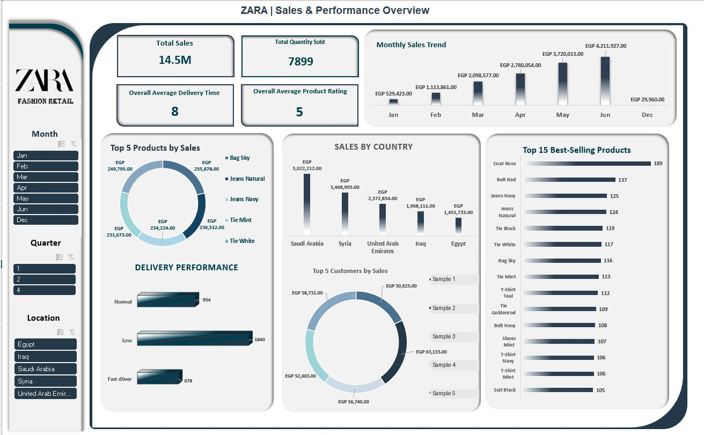
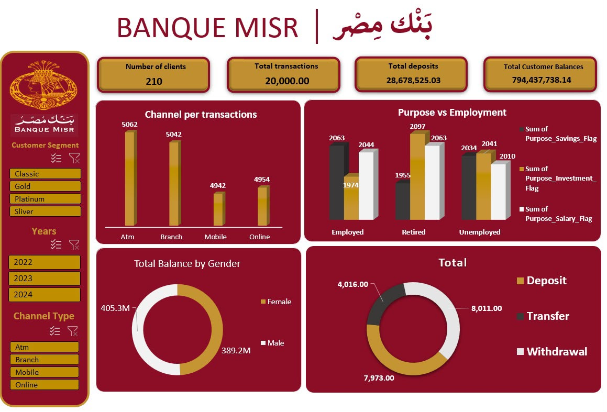
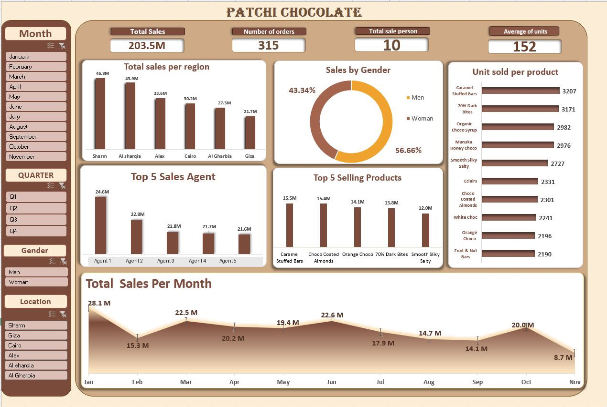

PRACTICAL EXPERIENCE
Reporting & dashboards
Microsoft Excel · Power BI
Data visualization, KPI analysis, business reporting and dashboard development.
BUSINESS EXPERIENCE / ANALYTICAL DEVELOPMENT
Aspiring Data & BI Analyst
I connect customer service, sales and operations experience with practical Excel and Power BI reporting.
LinkedIn ↗01 / ABOUT
I am moving toward junior data analysis and business intelligence roles, building on real experience in travel, banking, retail sales and market research.
My work has included organizing and validating survey data, tracking operational KPIs, monitoring productivity and service quality, and helping customers solve practical problems.
I use Excel and Power BI for reporting and visualization. My aim is to ask clear business questions, make comparisons easier to understand and keep conclusions tied to the evidence.
02 / SKILLS
PRACTICAL EXPERIENCE
Microsoft Excel · Power BI
Data visualization, KPI analysis, business reporting and dashboard development.
FUNDAMENTALS
SQL · Python · DAX
Developing query, programming and calculation fundamentals.
ADDITIONAL SKILLS
Power Query · Tableau · Data cleaning · Business intelligence
A developing toolkit for preparing data and communicating business information.
03 / FEATURED WORK
Training-dashboard studies with evidence-led descriptions.

RETAIL ANALYTICS / TRAINING
A retail training dashboard connecting sales, product quantities, delivery categories and country comparisons.
Training study · dashboard preview
Read the study
FINANCIAL SERVICES ANALYTICS / TRAINING
A banking-themed training dashboard for reviewing transaction activity, customer segments and balance summaries.
Training study · dashboard preview
Read the study
SALES ANALYTICS / TRAINING
A sales training dashboard combining headline measures with product, customer-segment and time-based comparisons.
Training study · dashboard preview
Read the study
RETAIL PERFORMANCE / TRAINING
A chocolate-retail training dashboard with regional, product, agent and monthly sales comparisons.
Training study · dashboard preview
Read the study04 / EXPERIENCE
JUN 2025 - PRESENT
Digital Support Customer Service Specialist
Track operational KPIs and recurring service issues, manage travel booking cases and coordinate across airline, hotel, finance and technical teams.
JUN 2023 - JUN 2025
Customer Operations & Contact Center Professional
Monitored productivity and service-quality metrics, handled banking inquiries and supported new employees with procedures and system workflows.
DEC 2022 - MAY 2023
Sales Associate
Used customer preferences, needs and budgets to guide product recommendations, upselling and cross-selling.
MAY 2021 - JUL 2022
Market Research
Organized and validated survey data, supported research reports and conducted field and digital market research for FMCG brands.
05 / EDUCATION & LEARNING
EDUCATION
Bachelor's degree in Social Work · 2023
CURRENT DEVELOPMENT
Developing SQL, Python and DAX fundamentals alongside dashboard practice.
Continuing to build skills through learning and training-dashboard projects.
06 / CONTACT
Interested in junior data analysis, reporting and business intelligence opportunities.
GitHub profile ↗